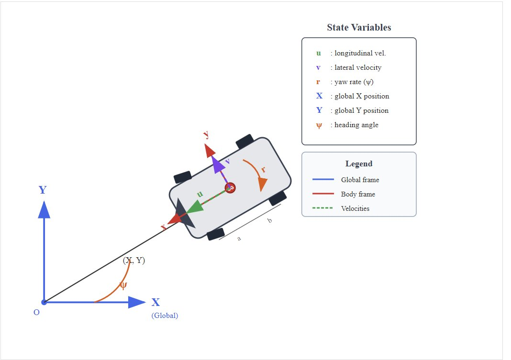
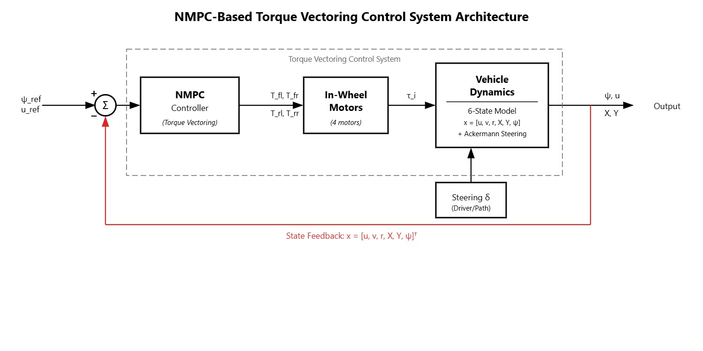
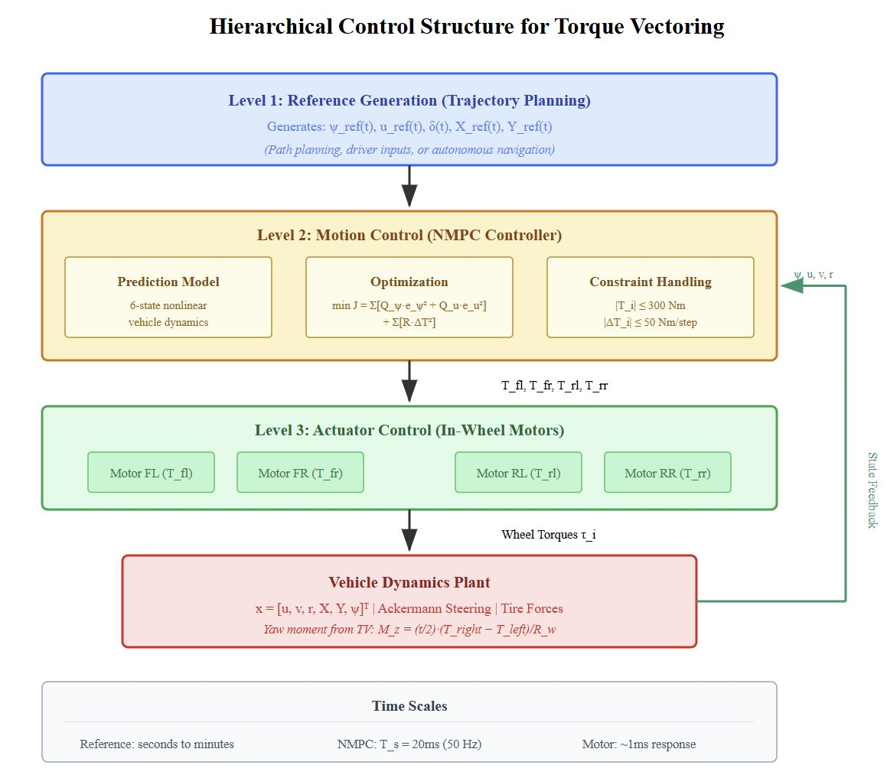
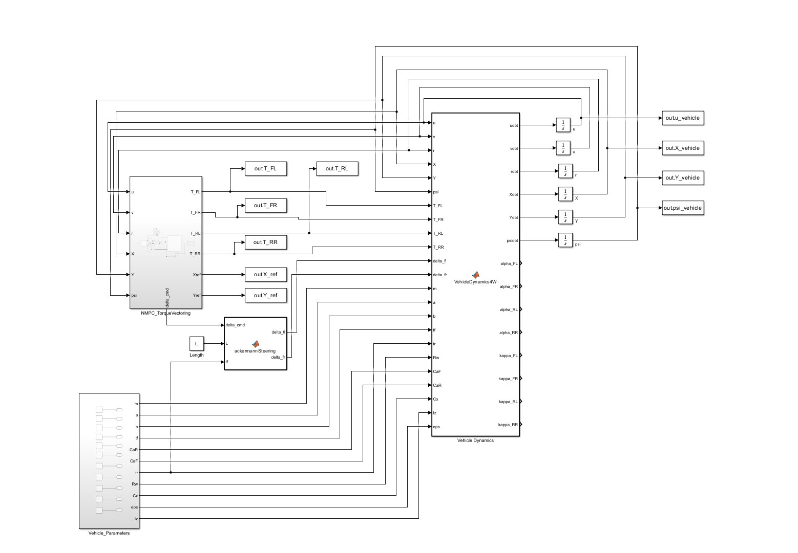
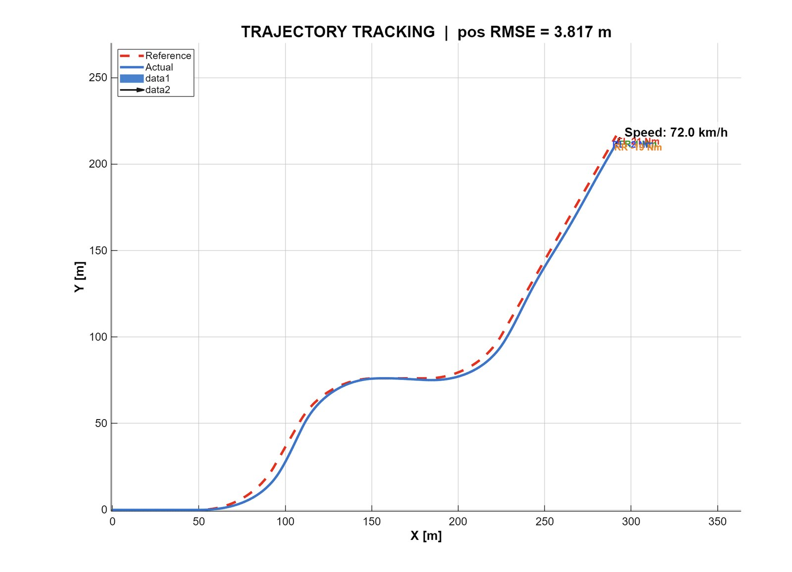
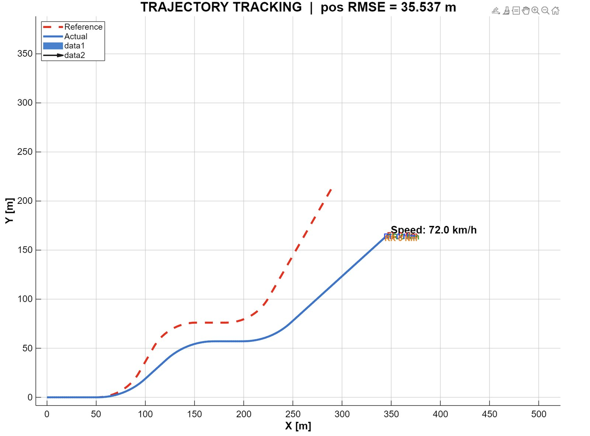
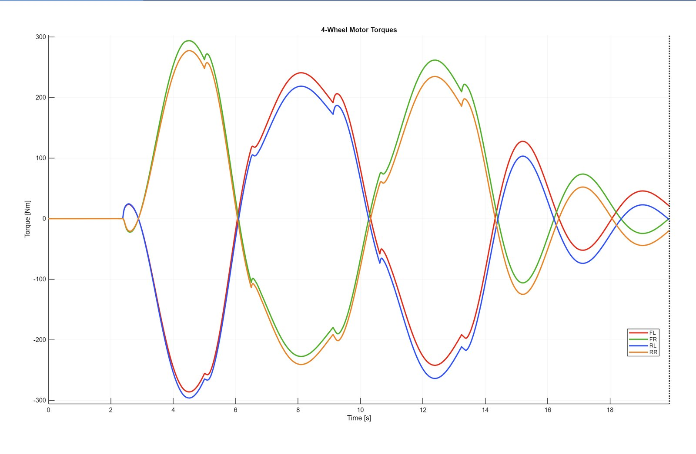
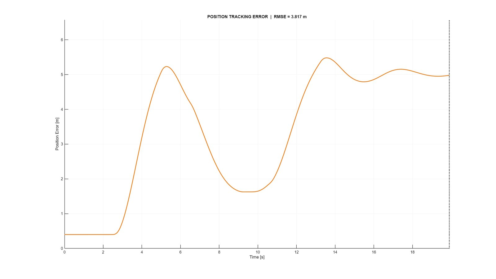
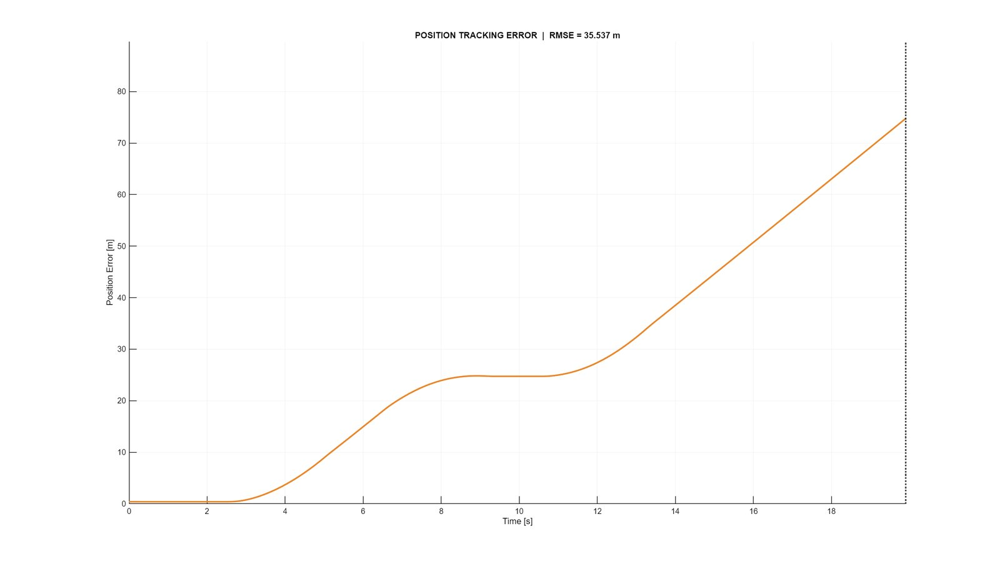

01
Vehicle model
Six states: forward and lateral speed, yaw rate, heading and global position. Each wheel gets its own longitudinal and lateral force, so a torque difference between left and right shows up as a yaw moment.


02
Controller structure
- Three levels: reference generation, the NMPC motion controller, and the four in-wheel motors.
- The NMPC tracks heading and speed while holding each motor within ±300 Nm and penalizing how fast torque changes.
- Higher torque on the outside wheels creates a yaw moment that counters understeer.



03
Results
Test track: alternating 50 m radius curves at 72 km/h, about 0.82 g lateral, with steering effectiveness cut 30% to force understeer. With an equal torque split the car runs wide and never recovers. With torque vectoring it stays on the path.
Result3.8 m position RMSE with torque vectoring; 35.5 m position RMSE with an equal split; ±300 Nm torque differential used; 100% solver convergence.




